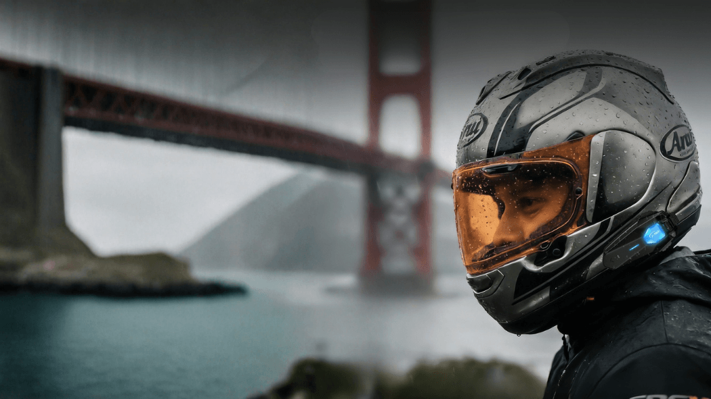
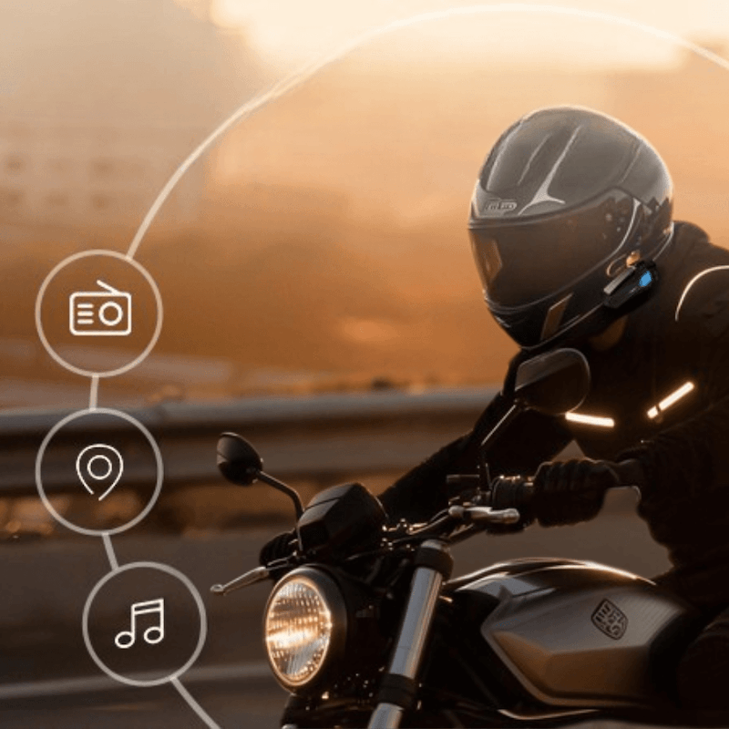
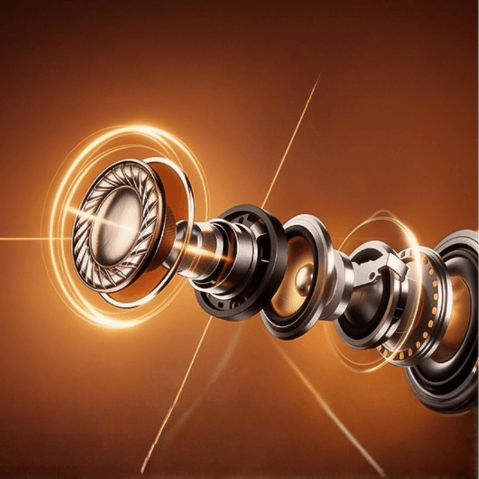
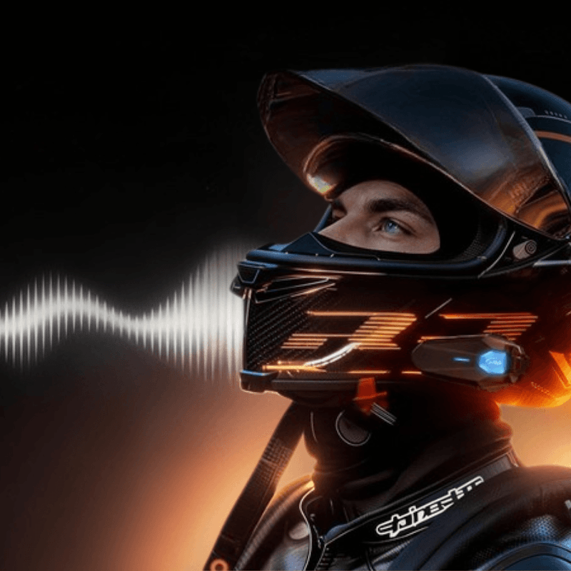
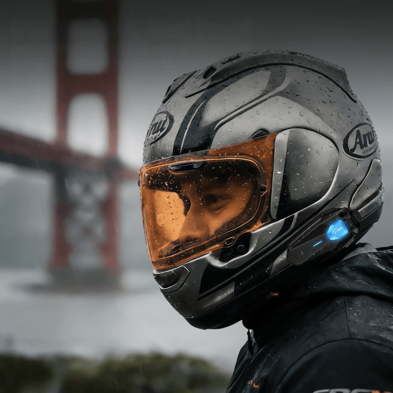

搭載磁吸式快拆設計，快速取下，充電與收納更直覺， 不必拆線、不用硬拔，日常使用更順手。 專為不需要對講功能的騎士打造，JX06se 專注於穩定藍牙連線與簡單操作。 無需群組配對、不用複雜設定，開機即連，讓騎行更純粹、更專注。


搭載 40mm 喇叭單體與鈦金屬振膜，帶來更飽滿低頻與清晰人聲。 無論通勤或長途騎行，都能享受細膩且穩定的高品質音效表現。
內建 DSP 與 CVC 8.0 雙重降噪技術，有效降低環境與風切聲干擾。 實測風噪抑制最高可達 −35 dB，即使在時速 130 km/h 環境下，語音清晰度仍可維持約 87%。


具備 IP67 防水防塵等級，可在雨天環境下正常運作。 產品通過 FCC、TELEC、NCC 與 BSMI 多重認證， 符合國際通訊與安全標準。 JX06PRO 內建 1000mAh 電池，支援約 2 小時快速充電，提供最長 60 小時通話、 40 小時音樂播放與 300 小時待機時間，滿足長時間使用需求。
透過官方直營電商平台購買 JX01，享有完整保固與售後支援。
Western Markets
Japan Market
Taiwan Market
一般規格
藍牙連線功能
電池電力
音訊技術